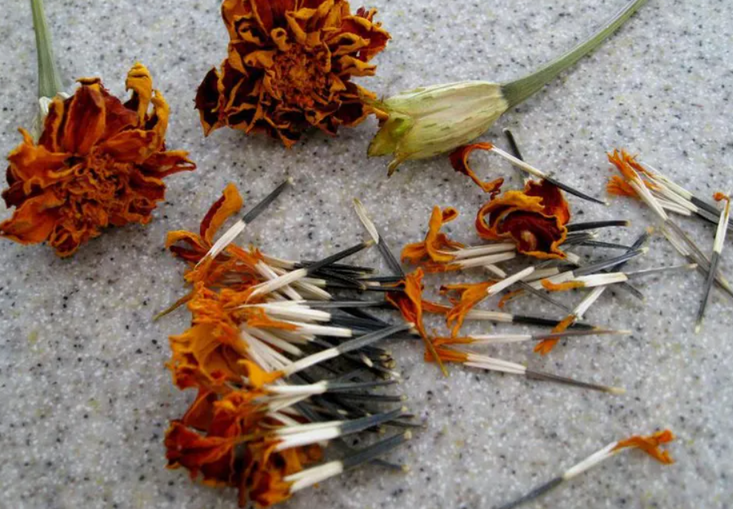

Plantando com Sementes

- Plante as sementes no começo da primavera. O solo tem que estar úmido (e não encharcado) para que o crescimento do cravo seja o melhor possível. Coloque as sementes espaçadas a 30 cm uma da outra.
- Cubra-as com 6 mm de terra e amasse o solo com firmeza.
- Regue as sementes de vez em quando para mantê-la úmida. Elas deverão germinar em duas ou três semanas
|